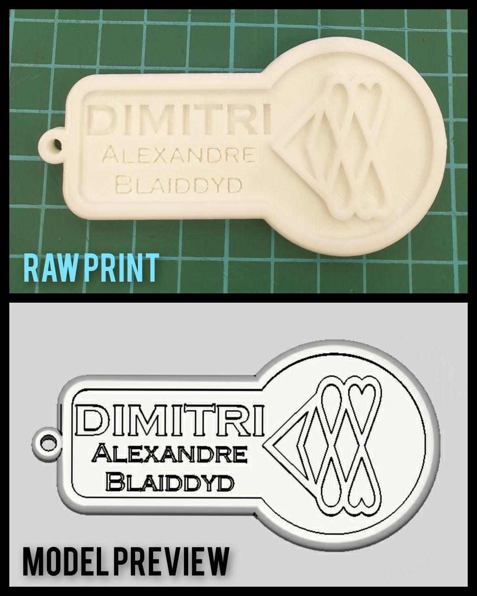
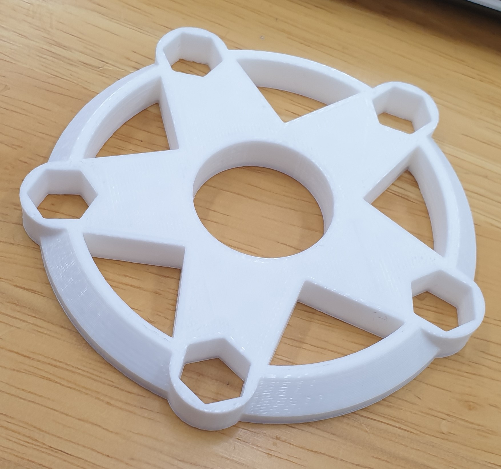

Assignments
This page serves as an overview of the assignments assigned leading up to the final module project.
You can jump to each section of the page using this list below.
- Safety
- Cardboard Prototyping
- Web Development
- Version Control and Webhosting
- Computer Aided Design in 3D
- 3D Printing
Safety
We don't want to get injured in a place like the Fablab because the consequences can be dire. So we learn about safety. Most of safety is common sense. How common is common sense? About as common as a fly in your soup. The basic understanding remains that it is necessary to wear long pants and covered shoes, and not have any hanging jewellery or accessories that can jam machines and injure you at the same time. It is also important to learn how to use the equipment properly (which is why SP offers the proficiency certification workshops) before using it, either supervised or unsupervised. Louis has already taught the 3D printer and the Laser Cutter earlier in the year under the SP Makers Club before my enrolment in this module but I guess we make do. I also frequently use the embroidery machine (Brother PR1050X) to work on textile based media, so I think I know the Fablab enough to at least meet the basic safety requirements.
Cardboard Prototyping
This week's task is to prototype a handphone dock using cardboard. It initially presented relatively simple, but creating it to be as portable and compact proved a challenge on its own. The process of prototyping began with looking into various works done prior by other people on the Internet. I have downloaded many of the images for personal reference, but as I am not legally permitted to simply rehost the images on the site I will not be embedding any here. Typically, I have noticed that many phone stands have a degree of versatility to their design, allowing it to dock phones in both portrait and landscape orientations, change viewing angles, or even charge the phone while docked. This is a vital part of a phone stand that creates the universal usability within the mobile market range where phones and tablet devices range from small compact devices to the much larger screen tablets. My sample device for testing is a Samsung Galaxy Note 9 with no external protective case (this is important to specify as the thickness that some cases can add will majorly affect the fit and stability of the stand.)
Web Development and Site Hosting
As per the requirement of this module in particular, the site is hosted on Github Pages. Between Markdown and HTML/CSS I have opted to use HTML/CSS as my medium of choice to code for the site. I have had prior experience in HTML and this served to refresh and build on that experience. The initial template of the site is built upon Jake Wright's tutorial video on youtube, which I will embed here, and expanded on with tag and syntax references from w3schools to include additional functionality. By using the href function (hypertext reference) I can map together each site of my webpage to redirect correctly for easy navigation. In this site in particular, the href function has also been utilised on a smaller scale that redirects to a specific section of the page, as the eventual updates will make the page very wordy and long. Each HTML file refers to its own CSS stylesheet that is specifically edited to cater for the content on the page, but in general follow mostly the same data. This stylesheet has to be referenced in the raw HTML file itself for it to apply when loading the website. Because of this, my generic naming convention is simply pagename.html matched with the pagename.css . It is vital to put both stylesheet and HTML file in the same folder when possible such that it can create an optimal environment for any editing work as I will not have to refer to an entirely separate directory. Despite Rodney's preach for SublimeText I have decided I am going to use Notepad++ just because I can. Notepad++ is able to highlight and complete code based on the coding language that can be either detected by opening specific filetypes or selecting the language under the Language tab in the topbar.
Version Control
Version Control is a vital part of any digital based creative process be it Gamedev, Webdev, 3D Modelling or quite literally anything else. It is what, for the lack of better terminology in my head right now, saves thine arse when you make an updated build and everything breaks. Maybe you missed a semicolon. Maybe you forgot an endtag. It happens. So when this happens and we need to have something to show, we rollback the version to an older stable build while we fix the issue. In Fusion 360, this is a built in function that by default suffixes the file with a version number each time it is saved, and condensed into a project file that you can select the version to edit on. In Windows OS, when files are changed in any way, there are ways to rollback to previous saved states by going into the file properties and restoring the state. However, when it comes to Github, I know about as much as a anti-vaxxer does about vaccines. This means I will do dumb things on occasion and cause issues for myself. While I usually check, double check and triple check my files before completing the commit and push, I always back up my files to my D drive in dated chunks so I can push the old versions again if I have to. This rarely happens. I tend to purge my backup chunks after say, a month, or when it becomes obsolete. Better safe than sorry, but at some point the countless backups become a detrimental feature when you can't find what you need.
3D Computer Aided Design in Fusion 360
This task is part 1 of 2 of the 3D Modelling and Printing section of the module. As of right now I have a keychain sample file available for download which I am also going to preview it here. Unfortunately I am incredibly uncreative at the time of modelling this keychain and have opted for a very basic design. Anyway have fun.
Wow! As of 27 November, 3 new STL files have been uploaded into the Downloads tab! Head over to download for free now. These have been made in Fusion 360 using the Derive Insert tool and Emboss function.
The Emboss tool allows for selective extrusion from a face on an existing Body by using the sketch profiles. I typically use this to emboss text onto keychains. The emboss feature can toggle to deboss the surface as well.
For Lloyd's keychain, I have used a font recreation from Splatoon 2. However the native text tool in Fusion 360 was not very cooperative with this font in particular, so I have opted to use Illustrator (you can use any other vector-based graphic software) to create the SVG file.
In Illustrator, the Text Tool is used to insert the text at 60pts and then converted into Outline under Type > Create Outline and then exporting ass SVG. As far as I am aware, Fusion 360's native support of svg isn't the strongest, but it serves well enough for this purpose.
After inserting the SVG file as a sketch profile, I use the Emboss tool to emboss the text at 2mm height to match the overall height of the keychain at 5mm. I have positioned my sketch during the import, so the XYZ placement offset was unneccesary and left untouched at 0,0,0.
Due to overwhelmingly free time I have ended up modelling too many things and I will just plug this link HERE for those who want to see a gallery of all my shenanigans.
3D Printing
3D printing comes in two forms, SLA and FDM, but I have only had experienced FDM 3D Printing so far. FDM stands for Fused Deposition Modelling, or also FFF (Fused Filament Fabrication) makes use of spools of thermoplastics in various diameters melted to deposit onto a buildplate that can be heated, but the plastic cools quickly and becomes solid. This plastic is layered to create the 3D model. The Fablab@T1442 is where I usually go to 3D print on campus. I usually use the Ultimaker 2+, which utilizes 2.85mm filament and builds on a glass plate. This printer is unique in that instead of moving the nozzle upwards to place the Z-axis, the glass bed moves downwards such that the nozzle stays at a constant height. At home, I am currently using a Monoprice Select Mini V2 which has a small buildplate of 120mm*120mm and a maximum build height of 120mm, give or take. This printer utilizes 1.75mm filament. However, the 3D model cannot be printed directly in its raw STL form. Similar to how a standard inkjet printer runs on software that converts the document data to the printer's working format, the 3D model has to be sliced into information chunks in layers that the 3D printer can interpret. Many printers nowadays use some form of the Marlin firmware, so reference to the glossary on the site is always helpful for interpreting G-code manually for minor things such as editing temperatures. The sliced format is a g-code file that is saved to a microSD or SD card depending on the printer. However, many printers can only read up to SDHC card capacity (32GB), so I typically use a 16GB card when I can. Upon starting a print, the nozzle and bed have to preheat to a specified temperature dictated in the G-code. As we typically use PLA for prints due to the affordability and ease of use, I usually set the bed to be about 60C and the nozzle between 190C to 205C. Layer height can affect the amount of post-print processing and finishing, so I tend to stick around a 0.18mm layer to 0.2mm layer height as a balance between print time and post processing. Post processing is slightly tedious as PLA does not enjoy being sanded as much as other filaments do, and lower layer heights will make layer lines less visible but we don't have time to print a fidget spinner for 4 hours. Using a glassbed or a PEI sheet bed can be really helpful in bed adhesion especially with glue for the glass bed, but if you have to? A raft or brim works in a pinch.
 